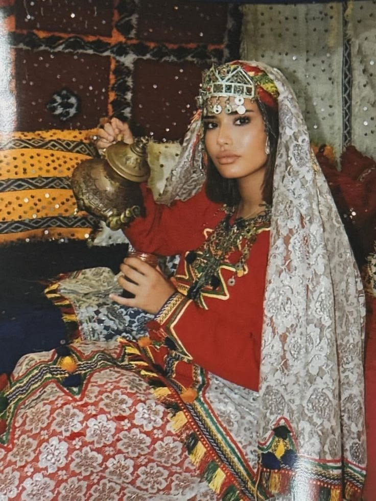
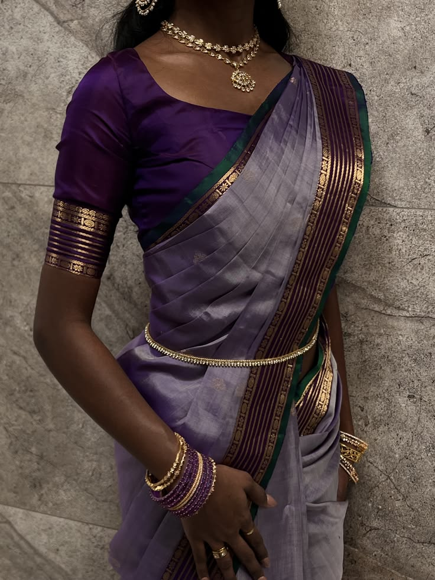

Kleding & verbondenheid
Kleding als verbinding
Traditionele kleding komt vaak voort uit een lange geschiedenis. Daardoor kan kleding binnen families van generatie op generatie worden doorgegeven. Kinderen en kleinkinderen dragen dezelfde tradities, waardoor de kleding verbonden blijft met de cultuur.
Ook wanneer mensen ver van hun familie of hun oorspronkelijke culturele omgeving wonen, kan het dragen van traditionele kleding helpen om die cultuur bij zich te houden. Kleding kan zo een herinnering zijn aan familie, afkomst en tradities.
Wat culturen met elkaar gemeen hebben
Bijzondere momenten
In verschillende culturen wordt traditionele kleding gedragen tijdens bijzondere momenten, zoals bruiloften, feesten en andere vieringen. Hierdoor wordt kleding onderdeel van belangrijke herinneringen en gebeurtenissen.
Kleuren, patronen en versieringen
Patronen, kleuren en versieringen kunnen een betekenis hebben die verbonden is met de geschiedenis van een cultuur. Zo kunnen bepaalde kleuren of het gebruik van goud bijvoorbeeld verwijzen naar rijkdom of een andere betekenis hebben binnen een traditie.
Traditie en moderne trends
Tegenwoordig worden traditionele kleding en stijlen ook onderdeel van moderne trends. Mensen kunnen kleding uit een andere cultuur interessant vinden en elementen daarvan willen dragen, ook wanneer zij zelf niet uit die cultuur komen.
Daarbij is het belangrijk om respect te houden voor de cultuur waar een stijl vandaan komt. Het verschil tussen culturele waardering en culturele toe-eigening kan hierbij een rol spelen. Soms worden bestaande traditionele stijlen opnieuw populair gemaakt onder een westerse naam, terwijl de stijl al lange tijd onderdeel is van een bepaalde cultuur.
Verschillende stijlen, dezelfde verbinding



Mijn conclusie
Hoewel de kleding en tradities per cultuur verschillen, kan de betekenis ervan overeenkomen. Kleding kan geschiedenis, familie en tradities met zich meedragen. Daardoor kan het een manier zijn om je verbonden te voelen met een cultuur, ook wanneer je ver daarvan vandaan woont.